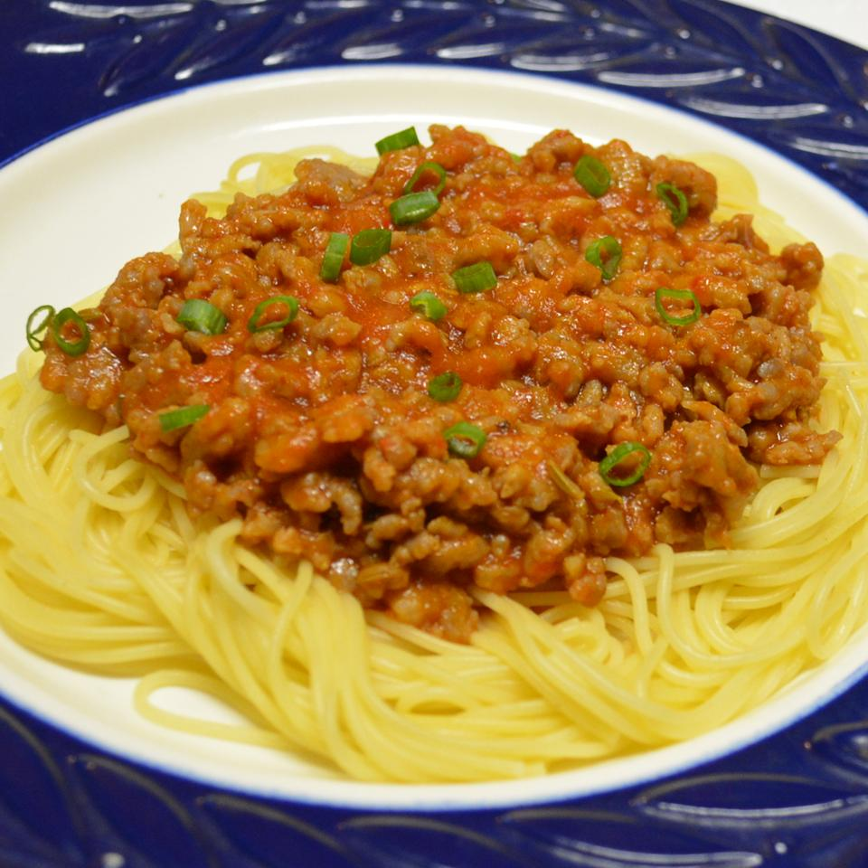

Mom's Spaghetti

Rappers favorite meal
My palms are sweaty, knees weak, arms are heavy There's vomit on My
sweater already, mom's spaghetti I'm nervous, but on the surface I look
calm and ready
For dinner. Time for some more of Mom's spaghetti
Ingredients
- 1 pound spaghetti
- 2 pounds lean ground beef
- 1 onion, minced
- 1 (6 ounce) can tomato paste
- 2 (10.75 ounce) cans condensed tomato soup
- 2 1/2 cups water
Directions
-
Bring a large pot of lightly salted water to a boil. Add pasta and cook
for 8 to 10 minutes or until al dente; drain.
-
In a large skillet over medium heat, cook ground beef with onion until
meat is brown. Drain. Return meat mixture to pan with tomato paste,
tomato soup and water. Cook, stirring, until heated through and
thickened, 5 to 15 minutes. Serve over cooked pasta.
Home